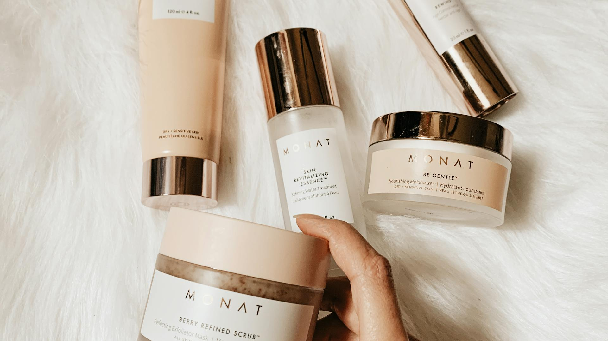
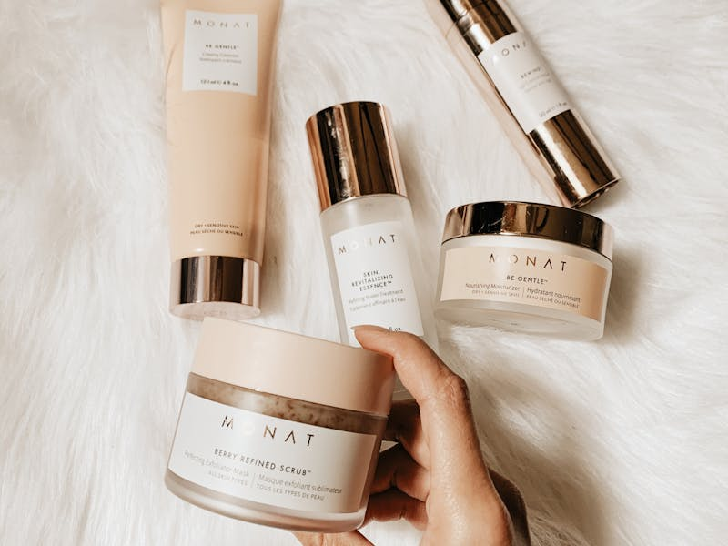
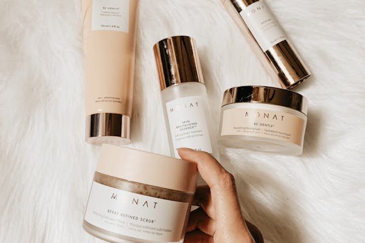

Yenilenme
Günlük bakım rutinini ve stüdyo uygulamalarını birbirinden açıkça ayırın.
Demo yönlendirme →BEAUTY STUDIO TEMPLATE · 2026
Güzellik stüdyolarının hizmetleri iddialı vaatler yerine ihtiyaç, süreç ve bakım beklentisi üzerinden anlatması için sakin bir açık kaynak şablon.

Bakım deneyimini
İHTİYAÇTAN BAŞLAYIN
Bu başlıklar örnek bilgi mimarisidir. Üretimde yalnızca uzmanlık alanınıza ve doğrulanmış uygulamalara göre düzenleyin.
Günlük bakım rutinini ve stüdyo uygulamalarını birbirinden açıkça ayırın.
Demo yönlendirme →Özel gün beklentisini süre, prova ve kullanılacak ürünlerle netleştirin.
Demo yönlendirme →Tek seferlik işlem ile düzenli bakım arasındaki farkı şeffaflaştırın.
Demo yönlendirme →
STÜDYO YAKLAŞIMI
Beklentiİstenen görünüm ve bakım alışkanlığı konuşulur.
UygunlukUygulamanın sınırları ve alternatifleri açıklanır.
Bakım notuSonrası için gerçek ve ölçülü bilgi verilir.
GÖRSEL JOURNAL



KİŞİSEL VERİSİZ DEMO
Bu araç yalnızca ekranda örnek bir görüşme başlangıcı üretir. Veri göndermez veya saklamaz.